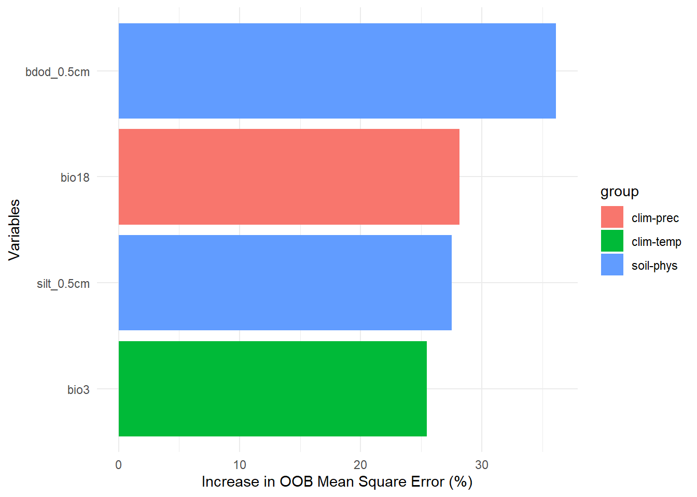

Code
library(tidyverse)
library(usdm)
library(CAST)
library(knitr)
library(randomForest)library(tidyverse)
library(usdm)
library(CAST)
library(knitr)
library(randomForest)This method was inspired by the work from Traoré et al. (2024).
Environmental variables were grouped as: climate - temperature / climate - precipitation / soil - physical variables / soil - chemical variables.
For each group, a first variable selection was done to avoid collinearity, by applying a using a Variance Inflation Factor (VIF) threshold of < 5 with a stepwise procedure (Naimi et al. 2014).
A second variable selection step is then performed for each group of variables using a foward feature selection (FFS) procedure (Meyer et al. 2025).
All selected variables are then grouped, and the VIF + FFS are applied to this subset of variables.
The RandomForest model is then calibrated with the final subset of variables.
vif_select <- function(vars, data, select = NULL, thres = 5) {
if (is.null(select)) select <- rep(TRUE, length(vars))
vif_res <- data[, vars[select]] |> vifstep(th = thres)
return(vars %in% vif_res@results$Variables)
}
ffs_select <- function(vars, data, select = NULL, response = "T_stock") {
if (is.null(select)) select <- rep(TRUE, length(vars))
ffsel <- data[, vars[select]] |>
ffs(data[, response], metric = "Rsquared") #, importance = TRUE, seed = 1000
# get list of predictor
return(vars %in% ffsel$selectedvars)
}
data_all <- read.csv("data/cache/data_stocks.csv") %>%
merge(read.csv("data/cache/climate_data.csv")) %>%
merge(read.csv("data/cache/soilgrids_data.csv")) %>%
drop_na()
# create groups
data_groups <- data.frame(
variable = grep("bio|cm", colnames(data_all), value = TRUE)
) |>
mutate(group = ifelse(variable %in% paste0("bio", 1:11), "clim-temp", NA)) |>
mutate(group = ifelse(variable %in% paste0("bio", 12:19), "clim-prec", group)) |>
mutate(group = ifelse(grepl("cec|nitrogen|phh2o", variable), "soil-chem", group)) |>
mutate(group = ifelse(grepl("bdod|cfvo|clay|sand|silt", variable), "soil-phys", group)) |>
group_by(group) |>
# vif selection by group, based on variables selected at previous stage
mutate(vif1 = vif_select(variable, data_all)) |>
# ffs by group, based on variables selected at previous stage
mutate(ffs1 = ffs_select(variable, data_all, vif1)) |>
ungroup() |>
# vif selection for all, based on variables selected at previous stage
mutate(vif2 = vif_select(variable, data_all, ffs1)) |>
# ffs for all, based on variables selected at previous stage
mutate(ffs2 = ffs_select(variable, data_all, vif2))
write.csv(data_groups, file = "data/cache/var_selection.csv", row.names = FALSE)The following variables were selected for each group at the different steps:
read.csv("data/cache/var_selection.csv") |>
pivot_longer(cols = paste0(rep(c("vif", "ffs")), rep(1:2, each = 2))) |>
group_by(group, name) |>
summarise(vars = paste(variable[value], collapse = ", ")) |>
pivot_wider(values_from = "vars") |>
relocate(group, vif1, ffs1, vif2, ffs2) |>
kable(col.names = c("Groups", paste(rep(c("VIF", "FFS")),
rep(c("group", "all"), each = 2),
sep = "_")))| Groups | VIF_group | FFS_group | VIF_all | FFS_all |
|---|---|---|---|---|
| clim-prec | bio14, bio15, bio18, bio19 | bio14, bio15, bio18, bio19 | bio18, bio19 | bio18 |
| clim-temp | bio11, bio3, bio5, bio8, bio9 | bio11, bio3, bio5, bio8, bio9 | bio3, bio5, bio9 | bio3 |
| soil-chem | cec_0.5cm, nitrogen_0.5cm, phh2o_0.5cm | cec_0.5cm, nitrogen_0.5cm, phh2o_0.5cm | cec_0.5cm, nitrogen_0.5cm | |
| soil-phys | bdod_0.5cm, cfvo_0.5cm, clay_0.5cm, silt_0.5cm | bdod_0.5cm, cfvo_0.5cm, clay_0.5cm, silt_0.5cm | bdod_0.5cm, cfvo_0.5cm, clay_0.5cm, silt_0.5cm | bdod_0.5cm, silt_0.5cm |
We first partition the data by site, keeping 20% of sites for validation.
data <- read.csv("data/cache/data_stocks.csv") %>%
merge(read.csv("data/cache/climate_data.csv")) %>%
merge(read.csv("data/cache/soilgrids_data.csv")) %>%
drop_na()
# partition data in train/validation
# randomly select 20% of sites for validation
validation_sites <- data %>%
group_by(site) %>%
summarise(type = c("cal", "val")[1+rbinom(1, 1, 0.2)])
data <- data %>%
merge(validation_sites)We only keep the explanatory variables selected (as described above).
data_groups <- read.csv("data/cache/var_selection.csv")
rf_sel <- data |>
select(data_groups$variable[data_groups$ffs2]) |>
randomForest(
data$T_stock,
subset = (data$type == "cal"),
ntree=500,
importance=TRUE
)The importance of each selected variable in the final model is represented below.
importance_sel <- importance(rf_sel, type=1) |>
as.data.frame()
importance_sel$variable <- rownames(importance_sel)
importance_sel |>
merge(data_groups) |>
ggplot(aes(x = reorder(variable, `%IncMSE`), y = `%IncMSE`, fill = group)) +
geom_bar(stat = "identity") +
coord_flip() +
xlab("Variables") +
ylab("Increase in OOB Measn Square Error (%)") +
theme_minimal()